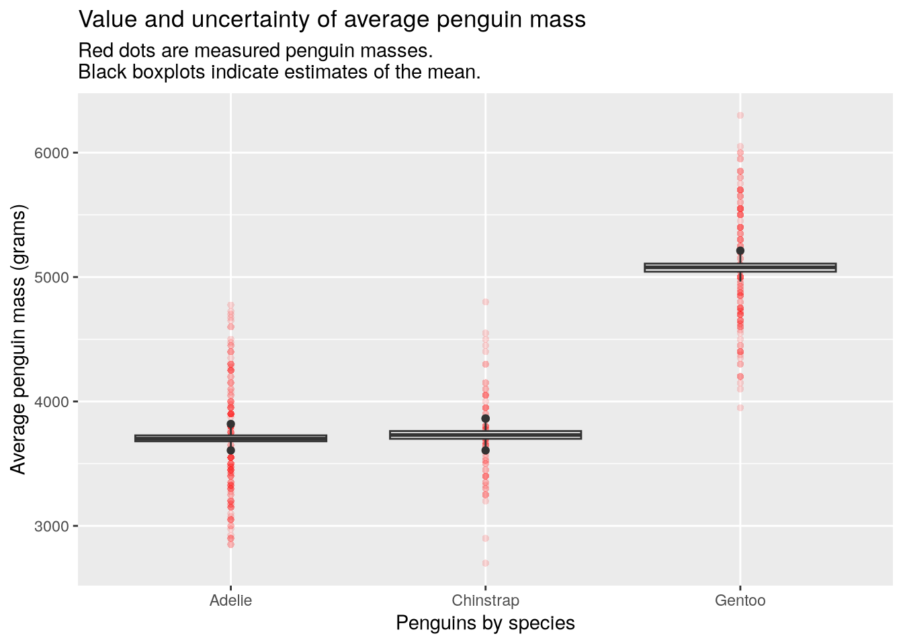
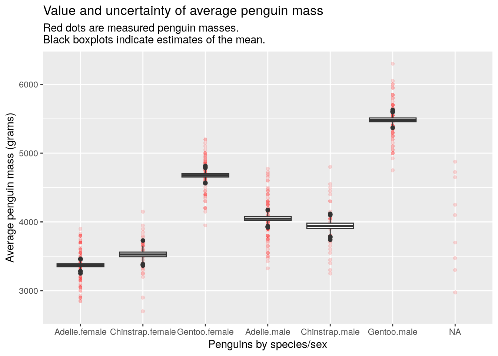
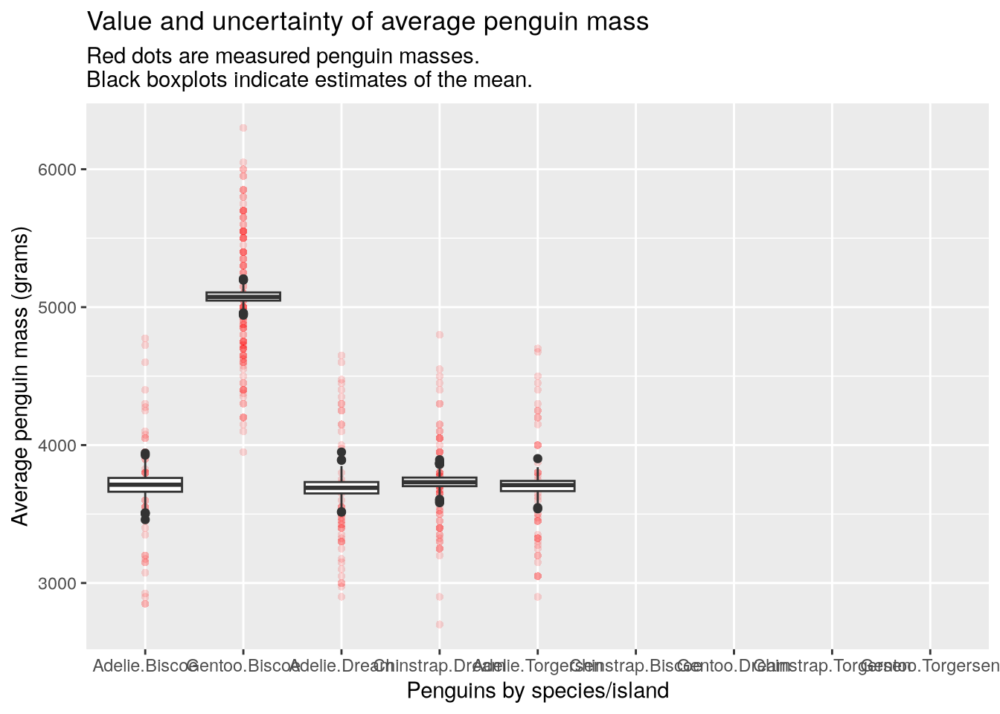

message("Hello, ", "how are you?")Hello, how are you?warning("Objects in mirror", " ", "may be closer than they appear.")Warning: Objects in mirror may be closer than they appear.After this lesson, you should be able to:
Debugging is the process of investigating why code does something unexpected, incorrect, or erroneous. In other words, we debug software in order to find the causes of bugs, so that we can fix the code and eliminate the bugs.
This chapter explains several strategies for debugging R code, as well as ways to prevent or minimize bugs as you write code. It explains how to print output, how R’s conditions system for warnings and errors works, and how to use R’s debugging functions, as well as introducing testing frameworks you can use to write tests that automatically check code for certain kinds of bugs. In some applications, compute time and memory usage matter almost as much as bugs, so this chapter also explains how to estimate the performance of R code.
R’s conditions system provides a way to signal and handle unusual conditions that arise while code runs. The system mainly deals with three kinds of conditions:
With a clear understanding of the conditions system, you can:
In short, the conditions system is the key to making sense of and fixing warning and errors. It will also enable you write code that’s easier to use and more robust. We’ll present several examples of how to use the conditions system later in this chapter.
You might be familiar with defensive driving: the idea that when you drive a vehicle, you should try to anticipate problems outside of your control, so that you can react safely or avoid them entirely. Defensive driving reduces the risk for you and others on the road.
When you write code, you can take a similar approach, called defensive programming. In this case, the idea is to try to anticipate problems that might occur as the code runs. As examples of problems you can anticipate, suppose your code:
Depending on the severity and nature of the problem, you might want the code to print a warning message, do something special to recover, or raise an error and stop running. The benefit of defensive programming is that it can help prevent bugs or make them easier to detect early, so that they can be fixed swiftly.
The subsequent sections describe some functions that are helpful for identifying problems, how to signal warnings and errors with the conditions system, how to intercept and handle warnings and errors, and packages you can use to add automated tests to your code.
R provides a variety of built-in functions you can use to check whether objects have specific values, types, or structures. Many of these functions have names that begin with is., such as:
is.logical, is.integer, is.double, is.complex, is.character to check the type of an object.is.numeric to check whether an object is a number.is.atomic to check whether a object is an atomic vector (as opposed to a recursive data structure, such as a list).is.na, is.null, is.nan, is.infinite to check for missing or special values.A few more functions for checking properties of objects are:
inherits to check whether an object has a specific class.identical to check whether two objects are exactly the same.all.equal to check whether two objects are approximately equal.<, <=, ==, and so on).You can use these functions together with if statements to make your code react to specific problems you anticipate. In some cases, you might want to raise a warning or error; the next section explains how to do so.
The rlang package provides alternatives with standardized interfaces for many of these functions, as well as some additional functions.
There are three built-in functions for signaling conditions:
message sends a message.warning raises a warning.stop raises an error (and, in most cases, stops R from running any further code).These functions have similar but not identical parameters. First, each accepts any number of unnamed arguments as a description of the condition. These arguments are concatenated with no separator between them. For example:
message("Hello, ", "how are you?")Hello, how are you?warning("Objects in mirror", " ", "may be closer than they appear.")Warning: Objects in mirror may be closer than they appear.R prints Warning: before the description for warnings, and Error: before the description for errors. By default, calling warning or stop from the body of a function also prints the name of the function:
f = function(x, y) {
warning("This is a warning!")
x + y
}
f(3, 4)Warning in f(3, 4): This is a warning![1] 7The name of the function that raised the condition is generally useful information for users that want to correct whatever caused it. Occasionally, you might want to disable this behavior, which you can do by setting call. = FALSE:
f = function(x, y) {
warning("This is a warning!", call. = FALSE)
x + y
}
f(3, 4)Warning: This is a warning![1] 7The warning function also has several other parameters that control when and how warnings are displayed.
Unlike message and warning, the stop function immediately stops the evaluation of code. For instance, in this function, the line x + y never runs:
f = function(x, y) {
stop("This is an error!")
x + y
}
f(3, 4)Error in `f()`:
! This is an error!When writing code—especially functions, executable scripts, and packages—it’s a good habit to include tests for unexpected conditions such as invalid arguments and impossible results. If the tests detect a problem, use the warning or stop function (depending on severity) to signal what the problem is. Try to provide a concise but descriptive warning or error message so that users can easily understand what went wrong.
The assertions package provides a concise way to check criteria and raise warnings or errors (with custom descriptions) if they aren’t met. You can approximate this with R’s built-in stopifnot function, but it’s not as flexible and user friendly (for example, you can’t set the error description).
In some cases, you can anticipate the problems likely to occur when code runs and even devise ways to work around them. As an example, suppose your code needs to load parameters from a configuration file, but the path to the file provided by the user is invalid. It might still be possible for your code to run by falling back on a set of default parameters. R’s conditions system provides a way to catch (intercept) messages, warnings, and errors, and to run alternative code in response.
You can use the try function to safely run code that might produce an error. If no error occurs, the try function returns whatever the result of the code was. If an error does occur, the try function prints the error message and returns an object of class try-error, but evaluation does not stop. For example:
bad_add = function(x) {
# No error
x1 = try(5 + x)
# Error
x2 = try("yay" + x)
list(x1, x2)
}
bad_add(10)Error in "yay" + x : non-numeric argument to binary operator[[1]]
[1] 15
[[2]]
[1] "Error in \"yay\" + x : non-numeric argument to binary operator\n"
attr(,"class")
[1] "try-error"
attr(,"condition")
<simpleError in "yay" + x: non-numeric argument to binary operator>The simplest thing you can do in response to an error is ignore it. This is usually not a good idea, but if you understand exactly what went wrong, can’t fix it easily, and know it won’t affect the rest of your code, doing so might be the best option.
A more robust approach is to inspect the result from a call to try to see if an error occurred, and then take some appropriate action if one did. You can use the inherits function to check whether an object has a specific class, so here’s a template for how to run code that might cause an error, check for the error, and respond to it:
result = try({
# Code that might cause an error.
})
if (inherits(result, "try-error")) {
# Code to respond to the error.
}You can prevent the try function from printing error messages by setting silent = TRUE. This is useful when your code is designed to detect and handle the error, so you don’t users to think an error occurred.
The tryCatch function provides another way to handle conditions raised by a piece of code. It requires that you provide a handler function for each kind of condition you want to handle. The kinds of conditions are:
messagewarningerrorinterrupt – when the user interrupts the code (for example, by pressing Ctrl-C)Each handler function must accept exactly one argument.
When you call tryCatch, if the suspect code raises a condition, then it calls the associated handler function and returns whatever the handler returns. Otherwise, tryCatch returns the result of the code.
Here’s an example of using tryCatch to catch an error:
bad_fn = function(x, y) {
stop("Hi")
x + y
}
err = tryCatch(bad_fn(3, 4), error = function(e) e)And here’s an example of using tryCatch to catch a message:
msg_fn = function(x, y) {
message("Hi")
x + y
}
msg = tryCatch(msg_fn(3, 4), message = function(e) e)The tryCatch function always silences conditions. Details about raised conditions are provided in the object passed to the handler function, which has class condition (and a more specific class that indicates what kind of condition it is).
To learn more about R’s conditions system, first read the documentation at ?conditions.
If you want even more details, see this chapter of Advanced R by Wickham.
By turning your R code into a package, you can set up a suite of automated tests. Then you can run the tests any time you or a collaborator make changes to the code, in order to verify that the code still works as intended. You can also add new tests as you add new features. With a test suite, you can verify that:
Automated testing is especially important for code that will be reused and edited frequently, because each edit can introduce new bugs. It’s also a good idea to create automated tests for any code where bugs might have severe consequences.
On the other hand, for a typical data analysis script, which you might only run 1-2 times, the effort it takes to set up automated tests usually outweighs the benefit. Use other defensive programming techniques instead!
The remainder of this section assumes you plan to package your R code and want to create automated tests.
The book R Packages by Wickham and Bryan is an excellent introduction to packaging R code. It includes multiple chapters about automated testing.
In the directory structure for your package, R will treat any script (.R file) you add to the tests/ subdirectory as an automated test. When R runs a test, it compares the output to a saved output file (.Rout.save file) of the same name. If the output matches, the test passes. Otherwise, the test fails. R runs all tests automatically whenever a package is built and installed. You can also run them manually with the R CMD check command line program or the test function from the devtools package. You can read more about R’s built-in system for automated tests in the Writing R Extensions manual.
The built-in testing system is slightly cumbersome, since you have to prepare an output file for every test script. Fortunately, there are a few packages designed to make testing more convenient:
tests/testthat/ subdirectory. In the scripts, use the test_that function to register a test. Within each test, you can use the package’s expect_ functions to check for specific criteria. See the documentation or the book R Packages for more details.If you suspect there’s a bug in your code, the first thing to do is gather more information about what the cause might be. This section provides a few relatively simple strategies to find out what’s happening without resorting to R’s debugger (which is covered later, in Section 7.4). You can also use these strategies to help you understand the code better, even you’re not trying to fix a bug.
A crucial skill in programming (and problem solving in general) is breaking problems down into smaller steps. Most of the time, the steps need to be carried out in a specific order, and if one step is incorrect, it will affect many of the steps after it. For example, you might remove outliers from a dataset before computing a mean. If you remove the wrong values, then it’s likely the mean will also be incorrect. The point is that you must verify the output from each step before considering the next one. In the example, you can spend a long time trying to understand why the mean is incorrect, but until you look at the step that removes outliers, you won’t find the answer.
In terms of R code, working through a problem step by step means running the code one expression (generally, one line) at a time. After running an expression, take time to inspect the results. That means that if the code changed a variable, you should look at the value of the variable. Confirm that it matches your expectations (Is it within the range of plausible values? Can you explain why it is what it is?). If doesn’t, there might be something wrong with the expression, or you might need rethink your understanding of what the expression does.
It’s also critical to start from the beginning. That means the first expression in your code, but it also means in a fresh R session. Restart R before you run the code, so that there aren’t any leftovers from code you ran earlier. These leftovers can obscure bugs and produce misleading results. In some cases, restarting R is enough to fix a bug!
If you’re using RStudio, you can restart R (without closing RStudio) through the “Session” menu.
Some expressions do so much that they’re hard to understand even if you run the code one step at a time (Section 7.3.1). Loops are a great example of this. One way to get information about what’s happening in a loop is to make the loop print out the details as it runs. Insert calls to the print function to print out values of variables. Printing things out is a good diagnostic strategy in general, and you can use it for any code, not just loops.
The message function and the print function both print things out, so you might wonder why we suggest print here. The message function is intended to print status messages to users, which is why it’s part of R’s conditions system (Section 7.1). In contrast, the print function is intended to print useful information for developers. Unlike message, it can print non-string objects, and it will often print extra information about the structure of an object.
For example, when printing a vector, the print function prints the position of the first element on each line in square brackets [ ]:
print(1:100) [1] 1 2 3 4 5 6 7 8 9 10 11 12 13 14 15 16 17 18
[19] 19 20 21 22 23 24 25 26 27 28 29 30 31 32 33 34 35 36
[37] 37 38 39 40 41 42 43 44 45 46 47 48 49 50 51 52 53 54
[55] 55 56 57 58 59 60 61 62 63 64 65 66 67 68 69 70 71 72
[73] 73 74 75 76 77 78 79 80 81 82 83 84 85 86 87 88 89 90
[91] 91 92 93 94 95 96 97 98 99 100The print function also prints quotes around strings:
print("Hi")[1] "Hi"These features make the print function ideal for printing information when you’re trying to understand some code or diagnose a bug.
A computer does exactly what you tell it to do, even if you tell it to do something that doesn’t make sense. There are two ways this can cause problems: if your instructions are impossible or if your instructions are incorrect. When you tell R to do something impossible, it will typically generate an error or warning, which will include a message that tries to tell you what went wrong. Read these messages! Often, they describe the problem and suggest a solution.
For example:
"7" + 5Error in `"7" + 5`:
! non-numeric argument to binary operatorWe can’t add the text "7" to the number 5. To make this code work, we have to change "7" to 7.
As another example, consider the read.csv function, which reads a comma-separated values file. What happens if you ask read.csv to read a file that doesn’t exist?
read.csv("nope")Warning in file(file, "rt"): cannot open file 'nope': No such file or directoryError in `file()`:
! cannot open the connectionThe error message doesn’t tell you that the file doesn’t exist, but it does say that R was unable to open a connection to the file. Since the functions built into R are relatively well-tested (by every R user), it makes sense to doubt the user input before doubting R. In this case, the only input was the file name, so a good first step is to check that the file actually exists.
R’s global options to control many different aspects of how R works. They’re relevant to the theme of this chapter because some of them control when and how R displays warnings and errors.
You can use the options function to get or set global options. If you call the function with no arguments, it returns the current settings:
opts = options()
# Display the first 6 options.
head(opts)$add.smooth
[1] TRUE
$bitmapType
[1] "cairo"
$browser
[1] ""
$browserNLdisabled
[1] FALSE
$callr.condition_handler_cli_message
function (msg)
{
custom_handler <- getOption("cli.default_handler")
if (is.function(custom_handler)) {
custom_handler(msg)
}
else {
cli_server_default(msg)
}
}
<bytecode: 0x55c30fe10668>
<environment: namespace:cli>
$catch.script.errors
[1] FALSEThis section only explains a few of the options, but you can read about all of them in ?options.
The warn option controls how R handles warnings. It can be set to three different values:
0 – (the default) warnings are only displayed after code finishes running.1 – warnings are displayed immediately.2 – warnings stop code from running, like errors.Setting warn = 2 is useful for pinpointing expressions that raise warnings. Setting warn = 1 makes it easier to determine which expressions raise warnings, without the inconvenience of stopping code from running. That makes it a good default (better than the actual default). You can use the option function to change the value of the warn option:
options(warn = 1)When you set an option this way, the change only lasts until you quit R. Next time you start R, the option will go back to its default value. Fortunately, there is a way override the default options every time R starts.
When R starts, it searches for a .Rprofile file. The file is usually in your system’s home directory (see this section and Appendix A of the R Basics Reader for how to locate your home directory). Customizing your .Rprofile file is one of the marks of an experienced R user. If you define a .First function in your .Rprofile, R will call it automatically during startup. Here’s an example .First function:
.First = function() {
# Only change options if R is running interactively.
if (!interactive())
return()
options(
# Don't print more than 1000 elements of anything.
max.print = 1000,
# Warn on partial matches.
warnPartialMatchAttr = TRUE,
warnPartialMatchDollar = TRUE,
warnPartialMatchArgs = TRUE,
# Print warnings immediately (2 = warnings are errors).
warn = 1
)
}You can learn more about the .Rprofile file and R’s startup process at ?Startup.
The key to fixing bugs and errors is pinpointing the cause. There are two main strategies for doing this:
Both strategies are valid and powerful.
Walking forward can be time-consuming, because you might have to run a lot of code before getting to anything related to the problem. On the other hand, it’s conceptually simple (you just go one step at a time, as in Section 7.3.1) and might help you uncover other problems as well.
Walking backward is often faster for experienced R users, because warnings and errors have patterns that you learn to recognize over time.
Consider this code, which is a variation on the example in Section 7.3.3:
num1 = "7"
num2 = 5
sum(num1, num2)Error in `sum()`:
! invalid 'type' (character) of argumentThe expression on line 3 (the call to sum) raises the error, but the expression on line 1 (which sets num1) is the actual source of the problem. When you debug by walking forward, you can stop after each line of code to check what’s changed.
R provides a built-in tool, called a debugger, to help you locate errors. With the debugger, you can interactively run code one step at a time. This is similar to what was described in Section 7.3.1, but can even run code within loops and function calls one step at a time. You can inspect and even modify variables as you run the code.
While it’s most useful for walking forward from a particular expression, you can also use the debugger to see where an error was raised, and thus walk backward (conceptually, without running the code) from there.
The browser function pauses the running code and starts the R debugger. To demonstrate what the debugger can do, consider this code:
# Run this in an R console.
g = function(x, y) (1 + x) * y
f = function(n) {
total = 0
for (i in 1:n) {
browser()
total = total + g(i, i)
}
total
}
f(11)There are two functions here, f and g. If you run the code in the R console, R pauses and opens the debugger as soon as evaluation of f reaches the call to browser. You can use the following commands to control the debugger:
n to run the next lines to “step into” a callc to continue running the codeQ to quit the debuggerwhere to print call stackhelp to print debugger helpThe debugger also provides several other commands, but these are generally the most useful.
Notice that you can use the debugger to “step into” a call. This means running the code in the body of the called function one step at a time, which is helpful if you suspect the bug originates there.
R provides several other built-in functions to help with debugging.
The debug function inserts a call to browser at the beginning of a function’s body. Use debug to debug functions that you can’t or don’t want to edit. For example:
# Run this in an R console.
f = function(x, y) {
x + y
}
debug(f)
f(5, 5)You can use undebug to reverse the effect of debug:
# Run this in an R console.
undebug(f)
f(10, 20)The debugonce function places a call to browser at the beginning of a function for the next call only. The idea is that you then don’t have to call undebug. For instance:
# Run this in an R console.
debugonce(f)
f(10, 20)
f(3, 4)The traceback function prints the call stack, or list of called functions, for the most recent error. This is quite helpful for walking backward to the source of an error, because it identifies the call where the error actually happened (which may be several layers deep in the call stack).
A printout of the call stack is sometimes also called a stack trace.
Finally, the global option error can be used to make R enter the debugger any time an error occurs. Set the option to error = recover:
options(error = recover)Then try this example:
# Run this in an R console.
bad_fn = function(x, y) {
stop("Hi")
x + y
}
bad_fn(3, 4)Let’s look at a realistic example to see how debugging works in practice. We’ll use the Palmer Penguins dataset, which was collected by Dr. Kristen Gorman at Palmer Station, Antarctica. The dataset is available to the public through the palmerpenguins package, which was created by Alison Horst. After installing the package, you can access the dataset with this code:
library("palmerpenguins")
Attaching package: 'palmerpenguins'The following objects are masked from 'package:datasets':
penguins, penguins_rawhead(penguins)# A tibble: 6 × 8
species island bill_length_mm bill_depth_mm flipper_length_mm body_mass_g
<fct> <fct> <dbl> <dbl> <int> <int>
1 Adelie Torgersen 39.1 18.7 181 3750
2 Adelie Torgersen 39.5 17.4 186 3800
3 Adelie Torgersen 40.3 18 195 3250
4 Adelie Torgersen NA NA NA NA
5 Adelie Torgersen 36.7 19.3 193 3450
6 Adelie Torgersen 39.3 20.6 190 3650
# ℹ 2 more variables: sex <fct>, year <int>In recent versions of R, the penguins dataset is built-in, but has slightly different column names. If you want to follow along with this case study, make sure to use the dataset from the package rather than the built-in dataset.
The dataset consists of measurements for 344 penguins on three islands. The measurements include flipper length, bill width, sex, and body mass.
Imagine that you’re a data analyst working on the dataset and you want to use a script that was written by a previous member of your lab.
You can view the script HERE.
To download the script, click on the “Download raw file” button at the top right of the code. Download the script to your computer if you want to try following along.
After downloading the script, you can use the source function to load the functions it defines into R:
source("R/debug_case_study.R")The script provides a function make_bootstrap_plots which splits the penguins into groups according to some categorical features like species and sex, then plots the uncertainty in the average penguin mass per group. Here’s the plot for mass by species:
make_bootstrap_plots(penguins, "species")
In the plot, the red dots are measured penguins within each group and the black boxplots show the variability in 1000 estimates of the group means. The estimates come from a statistical process called the bootstrap. It works by taking samples from the data we already have (this is called resampling), in order to measure how different the samples are from each other. Statisticians do this because we often want to know how different our conclusions would be with completely new data, but we can’t go back and collect the new data.
The make_bootstrap_plots function works for multiple categorical features. Here’s how to estimate the means of penguins grouped by species and sex, which we can use to identify species where one sex is larger than the other:
make_bootstrap_plots(penguins, "species", "sex")
Unfortunately, if you group the penguins by species and island, the code raises an error. This is our bug:
make_bootstrap_plots(penguins, "species", "island")Error in `indx[[i]] <- sample(1:N, size = 1)`:
! attempt to select less than one element in integerOneIndexWe need to pinpoint the source of the bug, identify the problem, and then fix it. There are a lot of ways to do this, but they all begin with carefully reading the error message! In this case, the message is:
Error in `indx[[i]] <- sample(1:N, size = 1)`:
! attempt to select less than one element in integerOneIndexAccording to the message, there was an attempt to select less than one element from something. The error message also shows the expression where it was raised, which appears to take a random sample (the sample function) from a sequence of numbers from 1 to N.
At this point, there are many ways to proceed. We could use the traceback function to learn more about where the error was raised, or add print calls to the code to print out details, or walk forward through the code one expression at a time, either manually or with the debugger. Let’s start with traceback:
traceback()4: resample(group$body_mass_g, B = B) at debug_case_study.R#50
3: bootstrap(data, B = B, ...) at debug_case_study.R#60
2: stack(bootstrap(data, B = B, ...)) at debug_case_study.R#60
1: make_bootstrap_plots(penguins, "species", "island")The call stack shows the history of calls leading up to the error, from innermost (4) to outermost (1). The error is raised in the resample function, which is one of the functions defined by the script. You can inspect the script to find the line in the body of the resample function that matches the expression mentioned in the error message. It’s line 16 in the script.
Remember that the location of an error and the cause of an error are not always the same thing. To try and understand the cause, let’s start the debugger by putting a browser call just before line 16, like this:
resample = function(data, B) {
N = length(data)
result = numeric(B)
# repeat this whole process B times
for (b in 1:B) {
# make an object to hold the resampled indices
indx = integer(N)
# resample one data point at a time
for (i in 1:N) {
browser()
indx[[i]] = sample(1:N, size=1)
}
# calculate the mean of this resampled data
result[[b]] = mean(data[indx])
}
# return all of the mean resamples
result
}Now when you run make_bootstrap_plots(penguins, "species", "island"), R will pause and run the debugger at the call to browser. You can examine the values of variables and step forward through the code to see how the values change.
In RStudio, you can use the Environment pane to check the values of variables, and the graphical interface to control the debugger.
Why aren’t we seeing an error right away? It’s probably because the expression that raised the error is inside of two for loops. The loops might run for many iterations before the error occurs. In other words, we need to know which iteration raises the error, not just which expression in the code.
A simple way to figure this out is to replace the call to browser with code that prints out something to identify the current iteration, such as the values of b and i. Then we can run the code until the error occurs, and check the last thing that was printed. We’ll use the message function to do this (since it can paste together several pieces of information):
resample = function(data, B) {
N = length(data)
result = numeric(B)
# repeat this whole process B times
for (b in 1:B) {
# make an object to hold the resampled indices
indx = integer(N)
# resample one data point at a time
for (i in 1:N) {
message("b=", b, " i=", i)
indx[[i]] = sample(1:N, size=1)
}
# calculate the mean of this resampled data
result[[b]] = mean(data[indx])
}
# return all of the mean resamples
result
}Now try calling the make_bootstrap_plots function again (here we only show the last few lines of output):
make_bootstrap_plots(penguins, "species", "island")...
b=1000 i=42
b=1000 i=43
b=1000 i=44
b=1 i=1
b=1 i=0
Error in indx[[i]] <- sample(1:N, size = 1) :
attempt to select less than one element in integerOneIndexBased on the output, the error occurs in the first iteration of the outer loop (b=1). Surprisingly, the inner loop appears to be counting backward: i=1 is printed before i=0. The value of i should never be 0, since the inner loop iterates over 1:N.
Is i set to 0 causing the error? We can check by using 0 to index a vector with [[, as in the original line 16:
c(1, 2, 3)[[0L]]Error in `c(1, 2, 3)[[0L]]`:
! attempt to select less than one element in integerOneIndexThat’s the same error message, so i set to 0 probably is the source of the problem! But why is i getting set to 0?
Remember what traceback told us: resample is called from the bootstrap function. Looking where that happens (line 53), we can see that this line is also inside of a loop. So we have a new call to resample in every iteration of the loop. That explains why there was so much output after we added the call to message to the resample function.
We need to figure out which iteration of the loop in the boostrap function is causing a problem. So let’s reuse the same strategy: we’ll add a call to message to the loop in bootstrap, somewhere before line 53, to print out details about the current iteration:
bootstrap = function(data, ..., B=1000) {
# get the names of grouping factors
grouping_factors = sapply(list(...), unlist)
# identify all possible combinations of grouping factors
grouping_levels =
sapply(grouping_factors,
function(grp) unique(data[[grp]]) |> as.character(),
simplify = FALSE) |>
setNames(grouping_factors)
# cross the grouping levels to get all combinations
groups = split(data, data[,grouping_factors])
# create an empty data.frame to hold the results
col_names = names(groups)
result = replicate(length(groups), numeric(B), simplify=FALSE) |>
as.data.frame(col.names = col_names)
# bootstrap the mean of mass for each group
for (i in 1:length(groups)) {
message("group=", i)
# get the subset of data that is relevant to this group
group = groups[[i]]
# calculate the mean of a bunch of bootstrap resamples
result[[i]] = resample(group$body_mass_g, B=B)
}
# return the result
result
}Now when we call make_bootstrap_plots, we get:
make_bootstrap_plots(penguins, "species", "island")...
b=1000 i=42
b=1000 i=43
b=1000 i=44
group=2
b=1 i=1
b=1 i=0
Error in indx[[i]] <- sample(1:N, size = 1) :
attempt to select less than one element in integerOneIndexIt looks like the error happens with the second group. Change the message call to a browser call, run the code again, and inspect the second group:
Browse[1]> groups[[1]]
# A tibble: 0 × 8
# ℹ 8 variables: species <fct>, island <fct>, bill_length_mm <dbl>, bill_depth_mm <dbl>,
# flipper_length_mm <int>, body_mass_g <int>, sex <fct>, year <int>Ahhh, the second group is empty: it has no rows! There were simply no penguns in the data for some combinations of species and island! That’s why i gets set to 0 and the code ends up trying to assign the 0th entry of indx.
Now that we’ve pinpointed the problem and identified its cause, how can we fix it? Hint: there are many solutions to this bug.
One solution is to avoid resampling empty groups. To achieve this, we need to replace 1:N, which returns the vector c(1, 0) when N is 0 (a common source of bugs!), with something else. Specifically, we’ll use seq_len(N), which returns an empty vector (with no elements) when N is 0. Let’s swap that in for 1:N on line 15 of debug_case_study.R:
resample = function(data, B) {
N = length(data)
result = numeric(B)
# repeat this whole process B times
for (b in 1:B) {
# make an object to hold the resampled indices
indx = integer(N)
# resample one data point at a time
for (i in seq_len(N)) {
indx[[i]] = sample(1:N, size=1)
}
# calculate the mean of this resampled data
result[[b]] = mean(data[indx])
}
# return all of the mean resamples
result
}Then we can try making the plot again:
make_bootstrap_plots(penguins, "species", "island")
Here you can see that the unobserved species/island combinations have been simply left empty and we no longer have an error. Yay!
How quickly code runs and how much memory it uses can be just as much of an obstacle to research computing tasks as errors and bugs. This section describes some of the strategies you can use to estimate or measure the performance characteristics of code, so that you can identify potential problems and fix them.
Running out of memory can be extremely frustrating, because it can slow down your code or prevent it from running at all.
It’s useful to know how to estimate how much memory a given data structure will use so that you can determine whether a programming strategy is feasible before you even start writing code. The central processing units (CPUs) in most modern computers are designed to work most efficiently with 64 bits of data at a time. Consequently, R and other programming languages typically use 64 bits to store each number (regardless of type). While the data structures R uses create some additional overhead, you can use this fact to do back-of-the-envelope calculations about how much memory a vector or matrix of numbers will require.
Start by determining how many elements the data structure will contain. Then multiply by 64 bits and divide by 8 to convert bits to bytes. You can then repeatedly divide by 1024 to convert to kilobytes, megabytes, gigabytes, or terabytes. For instance, an vector of 2 million numbers will require approximately this many megabytes:
n = 2000000
n * (64 / 8) / 1024^2[1] 15.25879You can even write an R function to do these calculations for you! If you’re not sure whether a particular programming strategy is realistic, do the memory calculations before you start writing code. This is a simple way to avoid strategies that are inefficient.
If you’ve already written some code and it runs out of memory, the first step to fixing the problem is identifying the cause. The lobstr package provides functions to explore how R is using memory.
You can use the mem_used function to get the amount of memory R is currently using:
library("lobstr")
mem_used()97.24 MBSometimes the culprit isn’t your code, but other applications on your computer. Modern web browsers are especially memory-intensive, and closing yours while you run code can make a big difference.
If you’ve determined that your code is the reason R runs out of memory, you can use the obj_size function to get how much memory objects in your code actually use:
obj_size(1)56 Bx = runif(n)
obj_size(x)16.00 MBobj_size(mtcars)7.21 kBIf a specific object created by your code uses a lot of memory, think about ways you might change the code to avoid creating the object or avoid creating the entire object at once. For instance, consider whether it’s possible to create part of the object, save that to disk, remove it from memory, and then create the another part.
Benchmarking means timing how long code takes to run. Benchmarking is useful for evaluating different strategies to solve a computational problem and for understanding how quickly (or slowly) your code runs. When you benchmark code, it’s important to collect and aggregate multiple data points so that your estimates reflect how the code performs on average.
R has built-in functions for timing code, but several packages provide functions that are more convenient for benchmarking, because they automatically run the code multiple times and return summary statistics. The two most mature packages for benchmarking are:
The microbenchmark package is simpler to use. It provides a single function, microbenchmark, for carrying out benchmarks. The function accepts any number of expressions to benchmark as arguments. For example, to compare the speed of runif and rnorm (as A and B respectively):
library("microbenchmark")
microbenchmark(A = runif(1e5), B = rnorm(1e5))Unit: microseconds
expr min lq mean median uq max neval
A 511.722 700.0005 704.2672 708.157 719.818 774.443 100
B 1800.679 2000.3755 2100.3738 2011.480 2033.912 5056.492 100The microbenchmark has parameters to control the number of times each expression runs, the units for the timings, and more. You can find the details in ?microbenchmark.
Profiling code means collecting data about the code as it runs, and a profiler is a program that profiles code. A typical profiler estimates how much time is spent on each expression (as actual time or as a percentage of total runtime) and how much memory the code uses over time. Profiling is a good way to determine which parts of your code are performance bottlenecks, so that you can target them when you try to optimize your code.
R has a built-in profiler. You can use the Rprof function to enable or disable the profiler. Essential parameters for the function are:
filename – a path to a file for storing results. Defaults to Rprof.out.interval – the time between samples, in seconds.memory.profiling – whether to track memory in addition to time.Set these parameters in the first call you make to Rprof, which will enable the profiler. Then run the code you want to profile. At the end of the code, call Rprof(NULL) to disable the profiler.
The profiler saves the collected data to a file. You can use the summaryRprof function to read the profile data and get a summary. Essential parameters for this function are:
filename – the path to the results file. Defaults to Rprof.out.memory – how to display memory information. Use "both" to see total changes.The summary lists times in seconds and memory in bytes.
The profvis package provides an interactive graphical interface for exploring profile data collected with Rprof. Examining profile data graphically makes it easier to interpret the results and to identify patterns.